02.27.2011 19:15
Sleet, freezing rain, snow, and rain... we have it all tomorrow
This is one of the ugliest weather forcasts I've seen in a while.
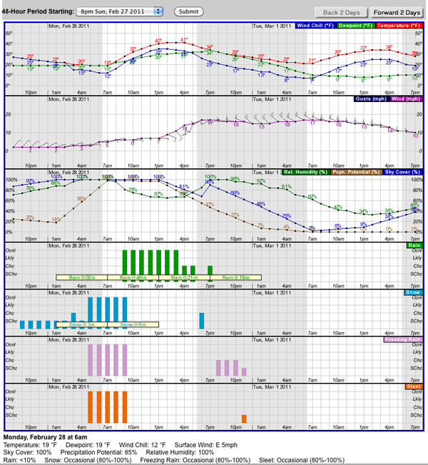
02.27.2011 12:44
twit Green Tech Today on the Hornblower hybrid ship
I'm a big fan of many of the TWiT shows
and often listen to just the audio of them while at the gym,
especially FLOSS (interviews with
the people behind really cool open source projects), iPad Today, This Week in Google and Security Now.
This is a fun quick video to watch about the Hornblower Hybrid ferry in the San Francisco Bay by Dr. Kiki on Green Tech Today (GTT 22: Hornblower). I would love it if any maritime engineers and outside mariners could comment or make their own video giving their own take.
This is a fun quick video to watch about the Hornblower Hybrid ferry in the San Francisco Bay by Dr. Kiki on Green Tech Today (GTT 22: Hornblower). I would love it if any maritime engineers and outside mariners could comment or make their own video giving their own take.
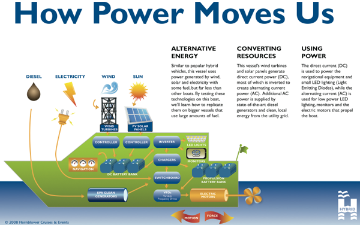
02.26.2011 12:44
Parsing DBT echo sounder depth nmea messages in python
I took a little break to warm up the brain this morning. John Helly
posted a message wondering what the format of the timestamp was in
some data from SIO's R/V Melville. It turned out to be UNIX UTC
timestamps followed by DBT depth sounder NMEA strings. I went a little
overboard in answering the question and tried to produce the best possible
python example that I could. I used kodos to make a regular
expression, then I added in a command line interface using the new
argparse module that replaces optparse. Then I used pylint and epydoc
to audit the code. The code can read from stdin or a text file. I
will write out an SQLite database and if you ask for verbose mode, it
will print the parsed results to the screen. If it can't decode
lines, it sends them to stderr with a message. It turns out that
there is a bit of unexpected interaction between epydoc and the new
python .format string templating system, but that was fixed by using
{{name}} instead of {name} for epydoc. I know, epydoc is
out of favor, but I still really like it. DBT (Depth Below
Transducer) is documented in the GPSD NMEA.txt. Like most NMEA,
is is kind of rediculous. It really should just have the depth in
meters and let software change the values if the user wants the
results presenting in feet, fathoms, chains, or whatever.
I also added this nmea to my Healy NMEA parser. I should really pull out the nmea module and post it to github.
Here is the data John posted:
I also added this nmea to my Healy NMEA parser. I should really pull out the nmea module and post it to github.
Here is the data John posted:
1298419231.321 $SDDBT,17960.21,f,5474.27,M,2993.37,F*3E 1298419243.344 $SDDBT,16168.86,f,4928.27,M,2694.81,F*32 1298419255.374 $SDDBT,16168.65,f,4928.21,M,2694.78,F*3F 1298419267.401 $SDDBT,16170.58,f,4928.79,M,2695.10,F*3A 1298419279.421 $SDDBT,16178.03,f,4931.06,M,2696.34,F*39 1298419291.440 $SDDBT,10131.89,f,3088.20,M,1688.65,F*30 1298419303.470 $SDDBT,18892.32,f,5758.38,M,3148.72,F*32 1298419315.491 $SDDBT,16181.24,f,4932.04,M,2696.87,F*33 1298419327.515 $SDDBT,17455.23,f,5320.35,M,2909.21,F*36 1298419339.538 $SDDBT,16187.08,f,4933.82,M,2697.85,F*37And here is the code that I wrote...
#!/usr/bin/env python
# Turn off pylint messages that don't make sense in my opinion
# C0111: Missing docstring
# C0301: Line too long
# W0105: String statement has no effect - these are doc strings for epydoc
# W0142: parse_dbt_file: Used * or ** magic
# W0622: Redefining built-in '__doc__' - I use a doc string that can include __var__
# pylint: disable-msg=C0111,C0301,W0105,W0142,W0622
from __future__ import print_function # Aim towards Python 3.2
__author__ = 'Kurt Schwehr'
__version__ = '0.1'
#__revision__ = __version__ # For pylint
__date__ = '2011-Feb-26'
__copyright__ = '2011'
__license__ = 'MIT' # http://www.opensource.org/licenses/mit-license.php
__contact__ = 'kurt@ccom.unh.edu'
# Use two {{ and }} to avoid clashing with .format {var_name} variables
__doc__ = '''
Parse NMEA sonar DBT depth reports as seen on the SIO R/V Melville in 2011
To check style with pylint and epydoc (along with creating the documentation):
- pylint -i y dbt.py
- epydoc -v --check dbt.py
- ./dbt.py --doc-test -v
- epydoc dbt.py
- ./dpt.py --help
You can run the code with either stdin or a filename:
- cat nmea.txt | ./dbpt.py
- ./dbpt.py -i nmea.txt
- sqlite3 nmea-dbt.sqlite3 .schema
- sqlite3 nmea-dbt.sqlite3 \'SELECT * FROM dbt LIMIT 5;\'
@author: {__author__}
@version: {__version__}
@see: U{{Kodos<http://kodos.sourceforge.net/>}} helps build and test python regular expressions
@see: U{{Sqlite Manager<https://addons.mozilla.org/en-US/firefox/addon/sqlite-manager/>}} to view SQLite Databases as a spreadsheet
@requires: U{{Python<http://python.org/>}} >= 2.6
@requires: U{{epydoc<http://epydoc.sourceforge.net/>}} >= 3.0.1
@undocumented: __doc__ __revision__ __package__ __author__ __version__
@since: 2011-Feb-26
@status: Example code
@organization: U{{CCOM<http://ccom.unh.edu/>}}
'''.format(**locals()) #author=__author__,version=__version__)
import sys
import re # Regular expressions
import time
import datetime
import sqlite3
import argparse # Handle command line arguments. Replaces optparse
from operator import xor # For NMEA checksum
import doctest
DBT_NMEA_REGEX_STR = r'''[$](?P<talker>SD)(?P<sentence>DBT),
(?P<depth_ft>\d+\.\d+),f,
(?P<depth_m>\d+\.\d+),M,
(?P<depth_fath>\d+\.\d+),F
\*(?P<checksum>[0-9A-F][0-9A-F])'''
'Regular expression to parse sonar depth DBT NMEA strings. Verbose mode required'
DBT_RE = re.compile(DBT_NMEA_REGEX_STR, re.VERBOSE)
'Compiled regex for NMEA DBT'
SQL_CREATE = '''
CREATE TABLE IF NOT EXISTS dbt
(
id INTEGER PRIMARY KEY,
dbt_timestamp TIMESTAMP,
depth_m REAL
);
'''
'Create an SQLite 3 database for DBT NMEA messages'
SQL_INSERT = 'INSERT INTO dbt (dbt_timestamp, depth_m) VALUES (:date, :depth_m);'
'Command to add an entry into a DBT NMEA database'
def nmea_checksum(sentence):
'''8-bit XOR of everything between the [!$] and the *
>>> nmea_checksum("$SDDBT,17960.21,f,5474.27,M,2993.37,F*3E")
\'3E\'
@type sentence: str
@param sentence: A line with embedded nmea.
'''
nmea = [ord(c) for c in sentence.split('*')[0][1:]]
checksum = reduce(xor, nmea)
checksum_str = hex(checksum).split('x')[1].upper()
if len(checksum_str) == 1:
checksum_str = '0' + checksum_str
return checksum_str
def parse_dbt_file(nmea_file, sqlite_filename, verbose=False):
'''Parse a NMEA file containing DBT depth entries and write and SQLite 3 database
@type nmea_file: str or open file
@param nmea_file: input file name of Unix UTC time stamps followed by DBT NMEA
@type sqlite_filename: str
@param sqlite_filename: output filename for SQLite database
@type verbose: bool
@param verbose: Write the parsed messages to STDOUT
'''
db_cx = sqlite3.connect(sqlite_filename)
db_cx.execute(SQL_CREATE)
if isinstance(nmea_file, str):
nmea_file = open(nmea_file)
for line_num, line in enumerate(nmea_file):
line = line.rstrip() # remove any trailing white space and the newline
if line_num % 2 == 5000:
sys.stderr.write('line {line_num}\n'.format(line_num=line_num))
db_cx.commit() # Don't let the transaction get to large
try:
match = DBT_RE.search(line).groupdict()
checksum = nmea_checksum(line[line.find('$'):])
timestamp = time.gmtime(float(line.split()[0]))
except AttributeError:
sys.stderr.write('NON_DBT_LINE: %d "%s"\n' % (line_num, line))
continue
if checksum != match['checksum']:
sys.stderr.write('BAD_CHECKSUM: %d "%s"\n', (line_num, line))
continue
match['date'] = datetime.datetime(timestamp.tm_year, timestamp.tm_mon, timestamp.tm_mday, timestamp.tm_hour, timestamp.tm_sec)
if verbose:
print ('{depth_m}m\t{date}'.format(**match))
#print (sql_insert)
db_cx.execute(SQL_INSERT, match)
# Final commit to my sure we have flushed everything to the database
db_cx.commit()
def main():
'Handle command line interface'
parser = argparse.ArgumentParser(description='Parse nmea',
formatter_class=argparse.ArgumentDefaultsHelpFormatter)
parser.add_argument('-i', '--nmea-file', default=sys.stdin, #'nmea-dbt.txt',
help='Input file with Unix UTC timestamps followed by DBT lines')
parser.add_argument('-o', '--sqlite-file', default='nmea-dbt.sqlite3',
help='Where to write a SQLITE 3 database file for easier handling of the data')
parser.add_argument('-v', '--verbose', action='store_true', default=False, help='print the parsed results to stdout')
parser.add_argument('--doc-test', action='store_true', default=False, help='Run the internal checks')
args = parser.parse_args()
if args.doc_test:
sys.argv = [sys.argv[0]]
if args.verbose:
sys.argv.append('-v')
numfail, numtests = doctest.testmod()
if numfail == 0:
print ('ok. ', numtests, 'tests passed.')
sys.exit(0)
else:
print ('FAILED: %d of %d tests', (numfail, numtests))
sys.exit(1)
parse_dbt_file(args.nmea_file, args.sqlite_file, args.verbose)
if __name__ == '__main__':
main()
02.21.2011 16:53
Seismic exploration video
This is a nice video showing off seismic surveying. It's not a bad
overview. Worth the 9 minutes to watch it. Yes, it's definitely an
advertisement for Schlumberger.
02.21.2011 09:30
Refusing to learn and the cost of learning
Aaron wrote a nice article Refusing to
learn. However, it is missing two key items. The first is the
cost of learning something or, to borrow from chemistry, the
activation energy. Getting going in emacs takes discipline. It's
easier these days with the GUI and menus that are available if you
want them, but learning the key bindings takes energy. The second
missing part is the payback of that energy. If I work hard and the
payback is short (e.g. the software goes away or changes so much that
I have to learn it over), then my investment in the tool is worth only
a small amount. If however, I end up using something like emacs for
the rest of my life and it keeps paying off, that activation energy is
almost insignificant in the long run. Those two concepts are in the his post, but really not as strong as they should be.
02.20.2011 11:12
IMO 289 Current Flow Report 3-dimensions
I've never really looked very hard at the current messages in IMO Circ
289 until now. How do I specify currents that are west, south, or
down when the e, n, and up directions don't have negative signs? I
think we can use the spare bits to specify the sign of the 6
components of the two levels. That's yet more complexity in the code
people will have to implement, which is NOT GOOD ®
See page 60 of IMO, Guidance on the Use of AIS Application-Specific Messages, IMO, SN.1/Circ.289, Ref. T2-OSS/2.7.1, 2 June 2010
See page 60 of IMO, Guidance on the Use of AIS Application-Specific Messages, IMO, SN.1/Circ.289, Ref. T2-OSS/2.7.1, 2 June 2010
02.19.2011 13:00
Fairpoint communications
I just got a letter from Fairpoint Communications that my payment
didn't go through for insufficient funds. Thankfully, I had written
down a tech support number that actually works the last time I had
problems with them. When I got the tech on the phone, he said that
their billing system has been having a lot of problems lately and that
I could pay over the phone on Monday. I asked him why I couldn't log
in to my account to check online, he said a lot of customers have been
having their accounts not work over off and on over the last month.
He said they are "working on it" and keeping it offline for my
"safety." There is no ETA for a fix. What do I see when I try to
log in? Clearly it is not intentionally offline when you dump your
users into ASP code when they try to log in. How about some proper
exception handling? And now I know you are using code that is 5 years
old. How many security holes are in their 6 year old crusty C# code?
This is pretty bad customer service...
BTW, my SpeakEasy Speed Test numbers for FairPoint DSL in the SeaCoast area of New Hampshire are: 2.95 Mbps down and 0.70 Mbps up on a dry line (no phone service).
This is pretty bad customer service...
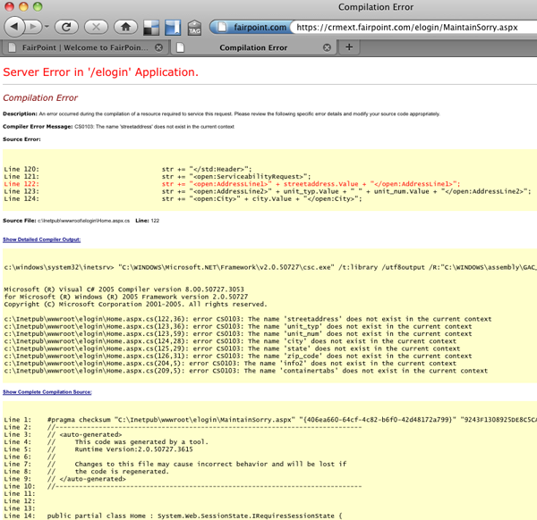
BTW, my SpeakEasy Speed Test numbers for FairPoint DSL in the SeaCoast area of New Hampshire are: 2.95 Mbps down and 0.70 Mbps up on a dry line (no phone service).
02.17.2011 09:06
Substructure Orion survey vessel
UPDATE 2011-Feb-18 1PM: You can sign up to watch the seminar live at 3PM EST: GoToWebinar: CCOM/JHC Lecture Series: Survey Platform Design Considerations and an Unconventional View of the Hydro World.
Yesterday, Substructure had an open house on their Orion Survey vessel in Portsmouth, NH. My main focus at CCOM is definitely not Multibeam, but that doesn't mean I can't enjoy checking out a well thought out system. I don't think you could put together a better overall design without forking out a ton more on the price of the vessel and sensors. But first, I have to appologize to Tom and Tom of Substructure for the poor quality of my iPhone 3GS photos. I should have grabbed one of the CCOM pro cameras.
Substructure will be giving a seminar at CCOM on Friday at 3PM. Anyone is welcome to come to the seminar.
First, here is the vessel. She's small, which is great for getting around tight spaces, and designed to be super rigid, which is important for the transformations between the GPS antennas, IMU, and sensors. There is a large amount of clear deck space considering how small the vessel is. You can see that there are hard mount points on both the port (not currently in use) and starboard (holding a winch with CTD). The VHF antennas fold down to allow for better clearance when on the trailer, but the GPS antennas are firmly fixed without long lever arms, but reasonable far apart and with minimal sky obstructions. The engines and electrical systems are designed for low acoustic/vibrational and electrical noise, which on many other vessels is a real killer to sonar data quality. Additionally, all of the water proof deck panels come up allowing for access to the engines, electrical, and hydraulic systems. They were thinking ahead about making maintenance and upgrading more manageable.
Inside the vessel, the piloting and navigation space is best described as clean. There isn't a lot in the way and the space looks efficient. The only things not to like is that the sonar operator faces backwards. I would prefer to be looking forward and to have a camera looking aft, but that's a small thing to quibble with. The Hypack screens are neatly mounted up against the wall. The workspace has just enough space to work and they have the rubber roll up keyboards that are fun and great when you don't have to do a lot of typing.
In this image, we are driving past the Portsmouth commercial dock (the one with the super expensive DHS fence protecting the scrap metal pile. You can see the pilings showing up on the left in the realtime display. I got too distracted to by great data to get a better picture of one of the wrecks or bridge abutments. The data looked fantastic from a crawl all the way up to 14 knots with calm water and even did pretty darn good at 14 knots when we hit our own wake. While I thought the data quality was awesome, I haven't been on a lot of other launches in shallow water to be able to compare.
The sonar head and IMU sensor are bolted together, which has the super advantage that most of the sighting in of the system can be done on a lab bench. Then the IMU and sonar can be sighted in to just the GPS antennas. The pair sit in a moon pool right below the sonar operators feet.
Also, they showed off their new CastAway CTD that is really awesome. It has a bluetooth interface for download the CTD data. All the CastAway needs now is a RF charging system, where just leaving the device on a mat will charge it up between casts. I hope the CastAway produces great data as the concept is really slick.
Thanks to Tom and Tom for a great tour!
Yesterday, Substructure had an open house on their Orion Survey vessel in Portsmouth, NH. My main focus at CCOM is definitely not Multibeam, but that doesn't mean I can't enjoy checking out a well thought out system. I don't think you could put together a better overall design without forking out a ton more on the price of the vessel and sensors. But first, I have to appologize to Tom and Tom of Substructure for the poor quality of my iPhone 3GS photos. I should have grabbed one of the CCOM pro cameras.
Substructure will be giving a seminar at CCOM on Friday at 3PM. Anyone is welcome to come to the seminar.
First, here is the vessel. She's small, which is great for getting around tight spaces, and designed to be super rigid, which is important for the transformations between the GPS antennas, IMU, and sensors. There is a large amount of clear deck space considering how small the vessel is. You can see that there are hard mount points on both the port (not currently in use) and starboard (holding a winch with CTD). The VHF antennas fold down to allow for better clearance when on the trailer, but the GPS antennas are firmly fixed without long lever arms, but reasonable far apart and with minimal sky obstructions. The engines and electrical systems are designed for low acoustic/vibrational and electrical noise, which on many other vessels is a real killer to sonar data quality. Additionally, all of the water proof deck panels come up allowing for access to the engines, electrical, and hydraulic systems. They were thinking ahead about making maintenance and upgrading more manageable.
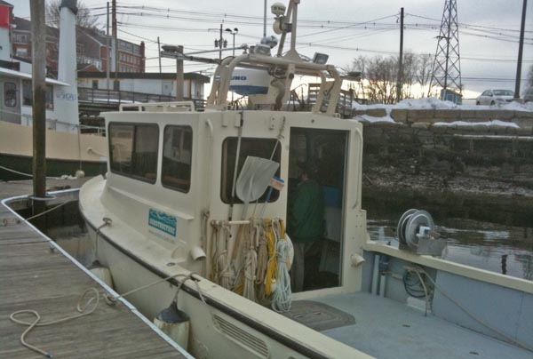
Inside the vessel, the piloting and navigation space is best described as clean. There isn't a lot in the way and the space looks efficient. The only things not to like is that the sonar operator faces backwards. I would prefer to be looking forward and to have a camera looking aft, but that's a small thing to quibble with. The Hypack screens are neatly mounted up against the wall. The workspace has just enough space to work and they have the rubber roll up keyboards that are fun and great when you don't have to do a lot of typing.
In this image, we are driving past the Portsmouth commercial dock (the one with the super expensive DHS fence protecting the scrap metal pile. You can see the pilings showing up on the left in the realtime display. I got too distracted to by great data to get a better picture of one of the wrecks or bridge abutments. The data looked fantastic from a crawl all the way up to 14 knots with calm water and even did pretty darn good at 14 knots when we hit our own wake. While I thought the data quality was awesome, I haven't been on a lot of other launches in shallow water to be able to compare.
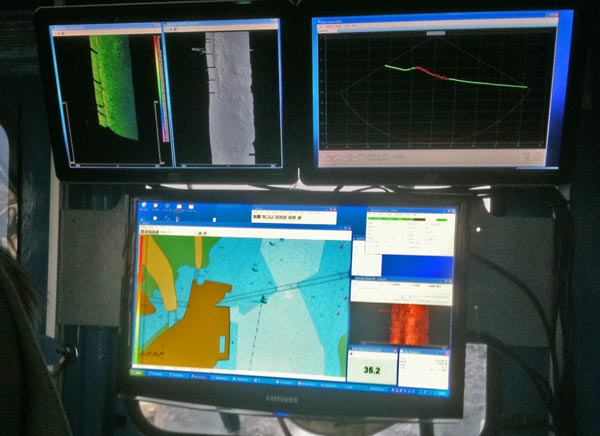
The sonar head and IMU sensor are bolted together, which has the super advantage that most of the sighting in of the system can be done on a lab bench. Then the IMU and sonar can be sighted in to just the GPS antennas. The pair sit in a moon pool right below the sonar operators feet.
Also, they showed off their new CastAway CTD that is really awesome. It has a bluetooth interface for download the CTD data. All the CastAway needs now is a RF charging system, where just leaving the device on a mat will charge it up between casts. I hope the CastAway produces great data as the concept is really slick.
Thanks to Tom and Tom for a great tour!
02.15.2011 08:25
Problem reporting
Writing a bug report or problem report that is usable by the person
you are giving it to is a very difficult thing to do. I recently got
this at 4:15AM:
Each type of system is going to have a different set of things that should be reported. If it was from a normal user program (say ArcGIS), failing, you will want to write one style of bug report. In this case, it was for one of my 3 NAIS feeds. Here is some of what I probably need in a problem report. Checklists can be really helpful.
In this case it turned out to be a client problem where, when the connection flaps, there end up being too many improperly closed TCP connections. On mac osx, I could see the problem like this using lsof (list of open files) which can monitor network connections in addition to files that are currently open.
In this case, my lesson is that when I don't see the exact problem reported by the watch stander, to kick it over to the USCG Help Desk right away. The watch standers are there to catch the event, not to debug it. The NAIS team has more tools and background available to know what is going on. This stuff is fairly complicated, so it takes everyone working together.
GOOD MORNING. THE FEED IS CURRENTLY NOT CONNECTED.While technically correct, it took me a second report before I think, but am not totally sure, I found the problem on a different feed than was reported. As quoted from the movie Short Circuit, "Malfunction. Need input!"
Each type of system is going to have a different set of things that should be reported. If it was from a normal user program (say ArcGIS), failing, you will want to write one style of bug report. In this case, it was for one of my 3 NAIS feeds. Here is some of what I probably need in a problem report. Checklists can be really helpful.
- The exact name of the feed that has a problem
- What is wrong? Is the network connection slow or totally out?
- When did the problem start?
- Can you ping my machine?
- If ping is down, how about a traceroute?
- What IP/hostname was the connection with before the problem started?
- Was there a graph of the feed to see if there were indications of impending trouble?
- What versions of the software are involved?
- Was any software updated recently?
- Are there any other unusual problems in the system that occured about the same time?
- And????
In this case it turned out to be a client problem where, when the connection flaps, there end up being too many improperly closed TCP connections. On mac osx, I could see the problem like this using lsof (list of open files) which can monitor network connections in addition to files that are currently open.
sudo lsof -i -nP | grep java | wc -l
1016
sudo lsof -i -nP | grep java | head
java 55103 schwehr 7u IPv6 0x2848fa70 0t0 TCP *:31414 (LISTEN)
java 55103 schwehr 8u IPv6 0xb2bc19c 0t0 TCP [::127.0.0.1]:31414->[::127.0.0.1]:52550 (ESTABLISHED)
java 55103 schwehr 9u IPv6 0xb2bc664 0t0 TCP [::1]:52545->[::1]:52544 (TIME_WAIT)
java 55103 schwehr 11u IPv6 0xb2bbf38 0t0 TCP [::CLIENT_IP]:52620->[::SERVER_1_IP]:REMOTE_PORT (CLOSE_WAIT)
java 55103 schwehr 12u IPv6 0x26320258 0t0 TCP [::CLIENT_IP]:52619->[::SERVER_2_IP]:REMOTE_PORT (CLOSED)
java 55103 schwehr 13u IPv6 0x283d0e4c 0t0 TCP [::CLIENT_IP]:52868->[::SERVER_2_IP]:REMOTE_PORT (SYN_SENT)
java 55103 schwehr 14u IPv6 0xba85d90 0t0 TCP [::CLIENT_IP]:59909->[::SERVER_1_IP]:REMOTE_PORT (SYN_SENT)
java 55103 schwehr 15u IPv6 0xb2bb5a8 0t0 TCP [::127.0.0.1]:31414->[::127.0.0.1]:52645 (ESTABLISHED)
java 55103 schwehr 16u IPv6 0xb2bc400 0t0 TCP [::CLIENT_IP]:52870->[::SERVER_2_IP]:REMOTE_PORT (SYN_SENT)
java 55103 schwehr 17u IPv6 0xb2bb0e0 0t0 TCP [::CLIENT_IP]:52874->[::SERVER_2_IP]:REMOTE_PORT (SYN_SENT)
1016 is a lot of connections for a process to have. I'm guessing that
in the normal case, this should be between 3-20 connections. The
minimum is 3 with an AISUser connected to the system and listening for
a connection locally to forward the data.
In this case, my lesson is that when I don't see the exact problem reported by the watch stander, to kick it over to the USCG Help Desk right away. The watch standers are there to catch the event, not to debug it. The NAIS team has more tools and background available to know what is going on. This stuff is fairly complicated, so it takes everyone working together.
02.14.2011 17:07
NOAA FY12 budget
NOAA
Announces FY 2012 Budget: Science and Innovation Cited as Keys to
Economic Recovery
...
The budget request represents a $6.8 million decrease compared to
the 2011 budget. This budget focuses on program needs, identifies
efficiencies, and ensures accountability across the agency. Core
functions and services are sustained, increases are requested for only
the most critical programs, projects, or activities necessary to meet
the nation's growing demand for NOAA's services, and careful cuts are
made throughout the budget.
"Perhaps most significantly, this budget clearly recognizes the
central role that science and technology play in stimulating the
economy, creating new jobs and improving the health and security of
Americans," said Dr. Jane Lubchenco, Ph.D., under secretary of
commerce for oceans and atmosphere and NOAA administrator. "Americans
rely on NOAA science, services and stewardship to keep their families
safe, their communities thriving, and their businesses strong. Our
work is everyone's business."
NOAA's budget will focus on an ambitious array of strategic
priorities, including:
* Improving prediction of high impact weather and water forecasts
* Supporting sustainable oceans, fisheries, and communities
* Providing critical investments in satellites and sensors to
further NOAA's observational mission
This budget furthers NOAA's commitment to strengthen science
throughout the agency, providing support for the next generation of
research and information to meet the growing demand for NOAA's science
and services and to drive economic recovery. The proposed request
includes $737 million for research and development related to climate,
weather and ecosystem science and for infrastructure to support NOAA's
R&D enterprise.
...
What does having the TJ in the press release imply? She is designed
for hydrographic surveying, but here was helping with the oil
spill research. We need more resources for both types of tasks.
02.10.2011 12:31
NOAA Administrator on Gulf of Mexico / Deepwater Horizon
NOAA
Administrator Keynote Address on Restoration in the Gulf of Mexico -
Beyond Recovery: Moving the Gulf Toward a Sustainable Future by
Jane Lubchenco:
... What Senator Nelson knew was that the environment and the economy were inseparable. His exact words were "Increasingly, we have come to understand the wealth of the nation is in its air, water, soil, forests, minerals, lakes, oceans, scenic beauty, wildlife habitats, and biodiversity... That's the whole economy. That's where all the economic activity and all the jobs come from." ...Gaylord Nelson was a Senator from Wisconsin and was the principal founder of Earth Day. There are two thing missing from the above quote: the brains/innovation of the population and the right of people (not limited to corporations) to use that intellectual ability and knowledge constructively.
02.09.2011 11:58
Handbook of Offshore Surveying
I've never heard of the Handbook of Offshore Surveying until the Hydro
International note Handbooks
of Offshore Surveying announcing the 2nd edition. At roughly $500
for the set, I'm not surprised that I haven't heard of it before. If
anyone has reviewed it, please let me know so I can link to your
review. I took a peak at the contents, but don't know any of the authors.
Skilltrade doesn't make it very easy to see the contents of the books, so I've pulled them out here:
Skilltrade doesn't make it very easy to see the contents of the books, so I've pulled them out here:
Volume 1
| Chapter | Title | Author(s) |
|---|---|---|
| 1 | Introduction to Hydrography | Huibert-Jan Lekkerkkerk; Tim Haycock |
| 2 | Nautical charting | Cor Mallie; IHO survey manual |
| 3 | Dredging | Huibert-Jan Lekkerkerk; Willem van der Lee |
| 4 | Inspection | Pieter Jansen; Tim Haycock |
| 5 | Survey for Offshore Installation | Tim Haycock |
| 6 | Rig Moves | Tim Haycock |
| 7 | Cable and Pipe lay | Pieter Jansen; Tim Haycock |
| 8 | Remotely Operated Vehicles | Pieter Jansen; Paul van Waalwijk van Doorn |
| 9 | Personnel and Organisation | Pieter Jansen; Huibert-Jan Lekkerkerk |
| 10 | Geotechnical Survey | Fugro |
| 11 | Seismic Survey | Robert van der Velden |
| 12 | Land survey | Huibert-Jan Lekkerkerk; Peter Veldkamp |
| 13 | Gravity & Magnetic Survey | Pieter Jansen; Aad van Dam |
| 14 | Project preparation | Pieter Jansen; Fugro; Huibert-Jan Lekkerkerk |
| 15 | Survey Operations | Huibert-Jan Lekkerkerk; Pieter Jansen; Arie Goedknegt |
| 16 | Processing and Reporting | Huibert-Jan Lekkerkerk, Maris; Cor Mallie; Pieter Jansen; Peter Veldkamp |
Volume 2:
| Chapter | Title | Author(s) |
|---|---|---|
| 1 | Geodesy | Huibert-Jan Lekkerkerk; Tim Haycock; Robert van der Velden; Aad van Dam |
| 2 | Co-ordinate systems | Tim Haycock; Piet Pols; Huibert-Jan Lekkerkerk; Paul van Waalwijk van Doorn; Robert van der Velden |
| 3 | Positioning | Paul van Waalwijk van Doorn; Huibert-Jan Lekkerkerk; Rob Berlijn†; Peter Veldkamp; Keith Park (MDL) |
| 4 | Satellite navigation | Huibert-Jan Lekkerkerk |
| 5 | USBL | Darioosh Naderi (Sonardyne); Pieter Jansen |
| 6 | LBL | Darioosh Naderi (Sonardyne); Pieter Jansen |
| 7 | NASNET | Sam Hanton (Nautronix) |
| 8 | SBL | Huibert-Jan Lekkerkerk |
| 9 | LSUSBL | Huibert-Jan Lekkerkerk |
| 10 | LUSBL | Huibert-Jan Lekkerkerk |
| 11 | Bathymeter & Altimeter | Rein de Vries |
| 12 | Level Instruments | Rob Berlijn; Peter Veldkamp; Huibert-Jan Lekkerkerk |
| 13 | Motion Sensors | Huibert-Jan Lekkerkerk |
| 14 | Gyro compasses | Huibert-Jan Lekkerkerk |
| 15 | Doppler Velocity Log | Huibert-Jan Lekkerkerk; Pieter Jansen |
| 16 | GPS Azimuth / INS systems | Huibert-Jan Lekkerkerk; CDL |
| 17 | Tides | Huibert-Jan Lekkerkerk; Aad van Dam; Rein de Vries; Jaap Mooij |
| 18 | Tidal Correction | Huibert-Jan Lekkerkerk; Aad van Dam; Rein de Vries |
Volume 3
| Chapter | Title | Author(s) |
|---|---|---|
| 1 | Sound | Robert van der Velden; Huibert-Jan Lekkerkerk; Jelle Roders; Maarten-Jan Theijs; Rein de Vries |
| 2 | Singlebeam ES | Huibert-Jan Lekkerkerk |
| 3 | Multi-channel ES | Huibert-Jan Lekkerkerk; Aad van Dam |
| 4 | Scanning sonar / profiler | Huibert-Jan Lekkerkerk; Rein de Vries |
| 5 | Multibeam ES | Huibert-Jan Lekkerkerk |
| 6 | Side Scan Sonar | Jelle Roders; Robert van der Velden |
| 7 | Airborne laser | Huug Haasnoot (Fugro Aerial Mapping) |
| 8 | Mobile laser scanner | Tjebbe Westerbeek; Huibert-Jan Lekkerkerk |
| 9 | Remote sensing bathymetry | Huibert-Jan Lekkerkerk |
| 10 | Other depth acquisition techniques | Huibert-Jan Lekkerkerk; Aad van Dam; Pieter Jansen |
| 11 | Waves & Current measurement | Herman Peters; Huibert-Jan Lekkerkerk; Sicco Kamminga |
| 12 | Soil sampling | Fugro; Cees Laban |
| 13 | In-situ testing systems | Fugro; Cees Laban |
| 14 | Sediment | Huibert-Jan Lekkerkerk |
| 15 | Sub bottom profiler | Robert van der Velden; Jelle Roders |
| 16 | Magnetometer | Dim Coumou; Pieter Jansen |
| 17 | Pipe and cable tracking systems | Rein de Vries |
02.09.2011 10:23
django security update - 1.2.5 / 1.1.4
UPDATE 2011-Feb-14: Django has been updated to 1.2.5 in fink unstable.
Fink django users: there is a security update for django that was released today and with the CVS outage at sourceforge, you will have to take extra action to make sure your installations of django through fink are secure. Here is a rough procedure:
CSRF == Cross-site request forgery (wikipedia)
Fink django users: there is a security update for django that was released today and with the CVS outage at sourceforge, you will have to take extra action to make sure your installations of django through fink are secure. Here is a rough procedure:
sudo -s mkdir -p /sw/fink/10.6/local/main/finkinfo/web cd /sw/fink/10.6/local/main/finkinfo/web curl -o django-py-1.2.5.info http://vislab-ccom.unh.edu/~schwehr/software/fink/django-py-1.2.5.info fink scanpackages fink install django-py27Security releases issued (djangoproject)
Flaw in CSRF handling
Django includes a CSRF-protection mechanism, which makes use of a
token inserted into outgoing forms. Middleware then checks for the
token's presence on form submission, and validates it.
Previously, however, our CSRF protection made an exception for AJAX requests, on the following basis:
1. Many AJAX toolkits add an X-Requested-With header when using
XMLHttpRequest.
2. Browsers have strict same-origin policies regarding XMLHttpRequest.
3. In the context of a browser, the only way that a custom header
of this nature can be added is with XMLHttpRequest.
Therefore, for ease of use, we did not apply CSRF checks to requests
that appeared to be AJAX on the basis of the X-Requested-With
header. The Ruby on Rails web framework had a similar exemption.
Recently, engineers at Google made members of the Ruby on Rails
development team aware of a combination of browser plugins and
redirects which can allow an attacker to provide custom HTTP headers
on a request to any website. This can allow a forged request to appear
to be an AJAX request, thereby defeating CSRF protection which trusts
the same-origin nature of AJAX requests.
Michael Koziarski of the Rails team brought this to our attention, and
we were able to produce a proof-of-concept demonstrating the same
vulnerability in Django's CSRF handling.
To remedy this, Django will now apply full CSRF validation to all
requests, regardless of apparent AJAX origin. This is technically
backwards-incompatible, but the security risks have been judged to
outweigh the compatibility concerns in this case.
...
CSRF == Cross-site request forgery (wikipedia)
02.08.2011 12:40
US not ready for Arctic oil drilling
US not ready for Arctic oil drilling, say officials
WASHINGTON - The United States is ill-equipped to deal with a major oil catastrophe in Alaska, the Coast Guard admiral who led the US response to the massive Gulf of Mexico oil spill and others have warned. Only one of the US Coast Guard's three ice breakers is operational and would be available to respond to a disaster off Alaska's northern coast, which is icebound for much of the year, retired admiral Thad Allen told reporters this week. Former Alaska lieutenant governor Fran Ulmer said that before drilling in the Arctic, the United States must "invest in the Coast Guard." "It's not an option; it's a mandatory next step for our country to take," said Ulmer, who was a member of a presidential commission that last month called for more government oversight to prevent a repeat of the Gulf of Mexico disaster. But funding for expensive new icebreakers is unlikely to be high on the list of priorities of Republicans who gained control of the House of Representatives by vowing to slash spending. And yet, Republicans are likely to push for more drilling off Alaska's coast, an area rich in oil. ...and Coast Guard commandant cites urgent need for icebreakers
02.07.2011 16:47
CCOM in Sea Technologies
Center for Coastal and Ocean Mapping/Joint Hydrographic Center in Sea Technology by David Sims
The last 10 years have brought about a sea change in the world of hydrography and ocean mapping, and the University of New Hampshire’s (UNH) Center for Coastal and Ocean Mapping/Joint Hydrographic Center (CCOM/JHC) has played a vital role. Guided by a 1999 memorandum of understanding with NOAA, and recently continued through a five-year competitive grant from the agency, the center began building its staff in January 2000. Today, it is a world-class research and teaching facility that trains the nation’s future hydrographers. It is also one of only two U.S. institutions that have been awarded a Category A certificate for education in hydrography, the highest level of international recognition in the field. The center is at the leading edge in developing tools that are streamlining the processing of multibeam echosounding data and transforming this wealth of information into rich, 3D seafloor maps. At the same time, under the rubric of Integrated Ocean and Coastal Mapping (IOCM)—in other words, "map once, use the data many times"—the center continues to advance the field of hydrography by making multibeam data applicable to purposes other than chart making, for example, in fisheries management. ...Wow... I showed up at CCOM during the summer of 2005. I've been there for half of the Center's history.
02.07.2011 08:52
ResearcherID
Is there any advantange for me to do this? I already have a bib file
avaible on my publications page. It does have a map section, but I
guess I don't have enough citations for a map to work. This just makes
me feel like I haven't done enough.
02.05.2011 08:47
Larry Mayer chairing the National Academies / NRC Deepwater Horizon oil spill project
Found via: UNH oceanographer to lead National Oil Spill Committee (Seacoast Online)
Effects of the Deepwater Horizon Mississippi Canyon-252 Oil Spill on Ecosystem Services in the Gulf of Mexico ( DELS-OSB-10-02 ). The first two meetings happened in January.
Committee Members
Effects of the Deepwater Horizon Mississippi Canyon-252 Oil Spill on Ecosystem Services in the Gulf of Mexico ( DELS-OSB-10-02 ). The first two meetings happened in January.
Committee Members
In order to evaluate the loss of ecosystem services in the Gulf of Mexico Large Marine Ecosystem due to the Deepwater Horizon Mississippi Canyon-252 spill, it is necessary not only to collect and analyze information related to specific types of services, but also to identify relationships among the lost ecosystem services and assess interdependencies. An evaluation of the effects of the spill on ecosystem services in the Gulf will require consideration of the effects of other human activities that have changed the balance of ecosystem services in the region. The report will provide a framework to assist federal agencies in assessing the effects of the oil spill on ecosystem services within the context of other human activities. In the foregoing context, an ad hoc committee will conduct a study and prepare a report addressing the following questions: (1) What methods are available for identifying and quantifying various ecosystem services, at spatial and temporal scales conducive to research, that provide meaningful information for the public and decision-makers? (2) What kinds of valuation studies and metrics are appropriate to measure the recovery of ecosystem services over time with regard to each of the following: natural processes, mitigation, and restoration efforts? What baseline measures are available that would provide benchmarks for recovery and restoration efforts? (3) Is there sufficient pre-spill baseline information available to separate oil spill impacts from impacts of other human activities? What methods are available to help distinguish impacts specific to the spill? (4) What ecosystem services (provisioning, supporting, regulating, and cultural services) were provided in the Gulf of Mexico Large Marine Ecosystem prior to the oil spill? How do these differ among the subregions of the Gulf of Mexico? (5) How did the spill affect each of these services in the short-term, and what is known about potential long-term impacts given the other stresses, such as coastal wetland loss, on the Gulf ecosystem? (6) How do spill response technologies (e.g., dispersant use, coastal berm construction, absorbent booms, in situ burning) affect ecosystem services, taking into account the relative effectiveness of these techniques in removing or reducing the impacts of spilled oil? (7) In light of the multiple stresses on the Gulf of Mexico ecosystem, what practical approaches can managers take to restore and increase the resiliency of ecosystem services to future events such as the Deepwater Horizon Mississippi Canyon-252 spill? How can the increase in ecosystem resiliency be measured? (8) What long term research activities and observational systems are needed to understand, monitor, and value trends and variations in ecosystem services and to allow the calculation of indices to compare with benchmark levels as recovery goals for ecosystem services in the Gulf of Mexico? The project is sponsored by the National Oceanic and Atmospheric Administration
02.02.2011 10:53
Google Chrome Cr-48 first impressions
It's a snow day, so I figured I'd give the Google Chrome OS Cr-48
laptop that arrived last week a spin. I apologize for the iPhone
photos of the screen.
Here are my first impressions from getting the machine setup and then realizing that I can't really use it much while working. I was hoping that there would be a way to tap into it a bit more and use emacs, org-mode, and python on it. Supposedly there is 16GB of storage inside and a SD card slot that I could use to add extra store. My world is not that cloud friendly.
Taking the device out of the overly fancy box, I have to say that it feels nice. Not as pollished as the ipad in it's apple case, but clean. It ways not too much and looks like a clean design.
First, we use mac address filtering at our house. I looked at the back of the laptop and could not believe it when they did NOT include the mac address anywhere on the device. You have got to be kidding! I didn't see it on the box either.
Google should make sure they put in a sticker with the mac address inside the battery bay. So I had to fiddle with the router turn off mac filtering, connect the device to the network, add it from the list of devices attached and then turn filtering back on. As I was doing this, the device started updating to the latest Chrome OS version without asking or telling me how much data was involved. Not cool. Always ask the user! That took about 4-5 minutes to update and reboot. But the boot time is great! Pretty speedy from power on.
I did have some strange flickering of the top of the screen during the boot cycle that could either be the video driver or cabling issues for the LCD. This only happened for about 30 seconds on one boot, so I don't know if it is a real issue.
Next, getting logged in with my google account was easy. I entered my google account and password. The computer then took a picture and I was at the tutorial page. The tutorial is definitely helpful. But I closed the laptop and moved to a different room and the laptop crashed. WFT?!? Turns out that the battery had not been charging.
Yes, it had been plugged in for 30 minutes at this point. I took a look through the Google Forum and found that I was not the only one with this problem. Google CR 48 battery WILL NOT charge. I logged out of my account, powered down the machine, took out the battery, waited 20 seconds, put the battery in and powered up. About 15 minutes later, I noticed the battery finally read 1% charged with 2:20 left to charge.
Going through the tutorial, I found out that the thing has a Verizon 3G chip inside. That's cool. But it isn't clear how much activation is and if there is a monthly fee. At least there isn't a contract. And 100MB a month is not much data. I already pay for 3G data from ATT, why am I going to pay for a 2nd or 3rd service?

Once I finished the tutorial, I found myself at the home screen:
It was time to take a look around. I went for the tools in the top right to see what is in the machine and what it will let me find out and/or change. I was surprised that the OS didn't discover my timezone, so that was on my list of things to get fixed.
A little searching got me to the system info. The first thing I confirmed is that it was indeed running linux. Woot!
And it is using an Intel Atom chip. I also noticed that it has 2GB of RAM.
Here is the versions page...
I tried installing a couple Android apps and that went well. I haven't really tried the Google Web Apps much, but the one big bummer I hit right away was that Bookmarks on the Cr48 didn't sync with my Google Bookmarks. That's bizarre and not helpful. I would have thought that would be something that would have been a part of the the sync process. If it's an option to turn on, I can't find it.
At some point soon, I will have to try out Google Docs, Fusion Tables, Calendar, Reader, and the rest. Will I be able to use Google refine to work on data? I need to look through Google's Chrome OS Forum and http://www.chromeosforums.net/, but I don't have much time to devote to it.
So what happens when I get on a plane or ship with this device? And how can I get emacs and python working with the system (I don't really want to start hacking against the grain)? Ymacs is an entertaining web version of emacs, but M-x org-mode gives nada and ymacs will not work without a network.
Here are my first impressions from getting the machine setup and then realizing that I can't really use it much while working. I was hoping that there would be a way to tap into it a bit more and use emacs, org-mode, and python on it. Supposedly there is 16GB of storage inside and a SD card slot that I could use to add extra store. My world is not that cloud friendly.
Taking the device out of the overly fancy box, I have to say that it feels nice. Not as pollished as the ipad in it's apple case, but clean. It ways not too much and looks like a clean design.
First, we use mac address filtering at our house. I looked at the back of the laptop and could not believe it when they did NOT include the mac address anywhere on the device. You have got to be kidding! I didn't see it on the box either.
Google should make sure they put in a sticker with the mac address inside the battery bay. So I had to fiddle with the router turn off mac filtering, connect the device to the network, add it from the list of devices attached and then turn filtering back on. As I was doing this, the device started updating to the latest Chrome OS version without asking or telling me how much data was involved. Not cool. Always ask the user! That took about 4-5 minutes to update and reboot. But the boot time is great! Pretty speedy from power on.
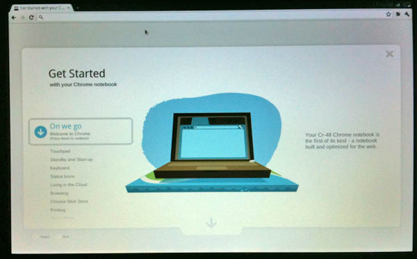
I did have some strange flickering of the top of the screen during the boot cycle that could either be the video driver or cabling issues for the LCD. This only happened for about 30 seconds on one boot, so I don't know if it is a real issue.
Next, getting logged in with my google account was easy. I entered my google account and password. The computer then took a picture and I was at the tutorial page. The tutorial is definitely helpful. But I closed the laptop and moved to a different room and the laptop crashed. WFT?!? Turns out that the battery had not been charging.
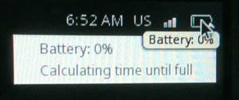
Yes, it had been plugged in for 30 minutes at this point. I took a look through the Google Forum and found that I was not the only one with this problem. Google CR 48 battery WILL NOT charge. I logged out of my account, powered down the machine, took out the battery, waited 20 seconds, put the battery in and powered up. About 15 minutes later, I noticed the battery finally read 1% charged with 2:20 left to charge.
Going through the tutorial, I found out that the thing has a Verizon 3G chip inside. That's cool. But it isn't clear how much activation is and if there is a monthly fee. At least there isn't a contract. And 100MB a month is not much data. I already pay for 3G data from ATT, why am I going to pay for a 2nd or 3rd service?
Once I finished the tutorial, I found myself at the home screen:
It was time to take a look around. I went for the tools in the top right to see what is in the machine and what it will let me find out and/or change. I was surprised that the OS didn't discover my timezone, so that was on my list of things to get fixed.
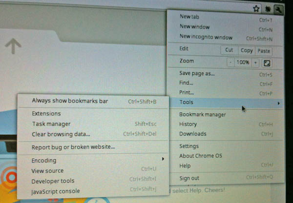
A little searching got me to the system info. The first thing I confirmed is that it was indeed running linux. Woot!
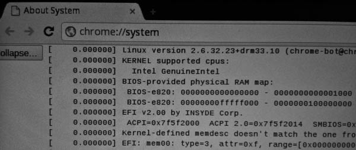
And it is using an Intel Atom chip. I also noticed that it has 2GB of RAM.
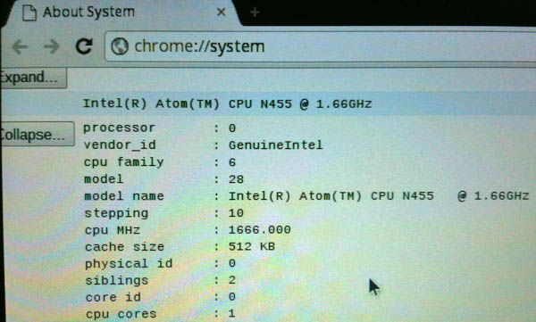
Here is the versions page...
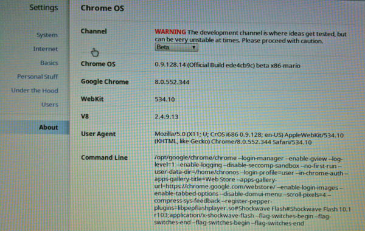
I tried installing a couple Android apps and that went well. I haven't really tried the Google Web Apps much, but the one big bummer I hit right away was that Bookmarks on the Cr48 didn't sync with my Google Bookmarks. That's bizarre and not helpful. I would have thought that would be something that would have been a part of the the sync process. If it's an option to turn on, I can't find it.
At some point soon, I will have to try out Google Docs, Fusion Tables, Calendar, Reader, and the rest. Will I be able to use Google refine to work on data? I need to look through Google's Chrome OS Forum and http://www.chromeosforums.net/, but I don't have much time to devote to it.
So what happens when I get on a plane or ship with this device? And how can I get emacs and python working with the system (I don't really want to start hacking against the grain)? Ymacs is an entertaining web version of emacs, but M-x org-mode gives nada and ymacs will not work without a network.
02.01.2011 14:22
McNutt to talk about Deepwater Horizon - Feb 3
If you are in the Stanford area, this is a public event:
Avoiding the Slippery Slope: Leadership Lessons from Inside the Oil Spill Featuring Dr. Marcia McNutt [Link likely short lived]
Avoiding the Slippery Slope: Leadership Lessons from Inside the Oil Spill Featuring Dr. Marcia McNutt [Link likely short lived]
The 2011 Conradin Von Gugelberg (CVG) Memorial Lecture on the Environment keynote speaker is Dr. Marcia McNutt, director of the United States Geological Survey (USGS) and science adviser to the United States Secretary of the Interior who will speak on crisis management during the 2010 Deepwater Horizon oil spill. A leader in oceanographic research, Dr. McNutt has also served as the president and chief executive officer of the Monterey Bay Aquarium Research Institute (1997-2009), and she recently headed the Flow Rate Technical Group in May 2010, which attempted to measure the Deepwater Horizon oil spill in the Gulf of Mexico.Looks like there will be live streaming.